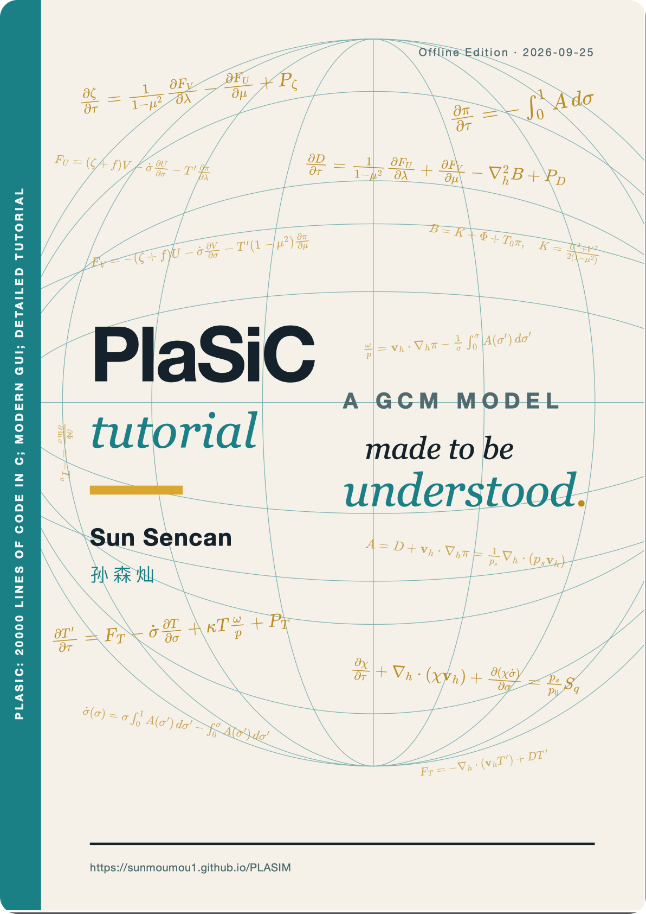
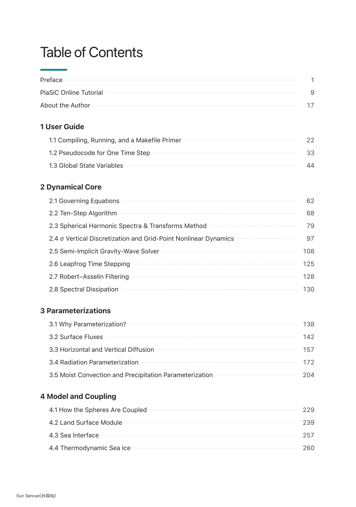
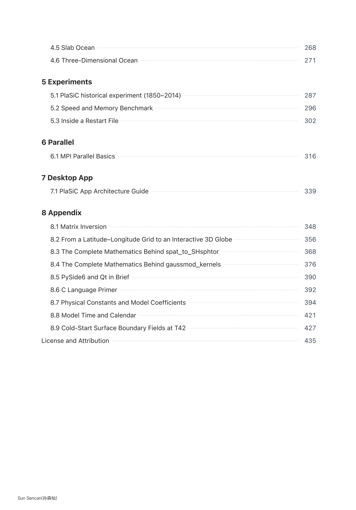
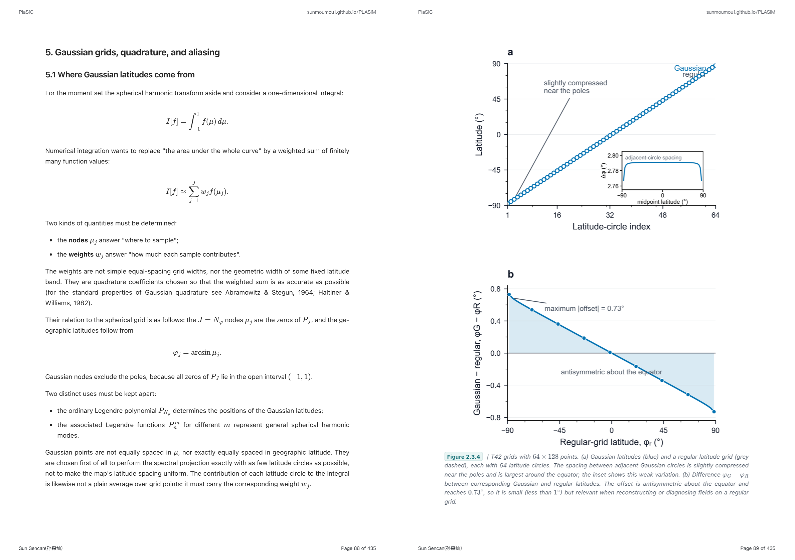
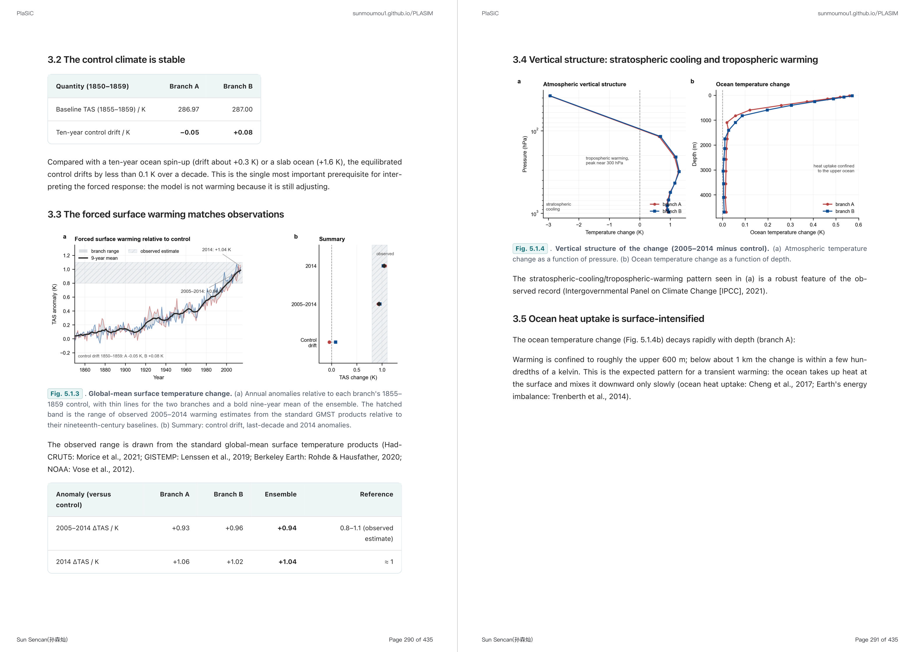

02 · Tutorial — the model guide
Every equation,
made clear.
PlaSiC ships with its own 400+pages book — a complete and careful tour of every principle and every formula in the model, from the spectral dynamical core to the coupled surface.
400+pagespages of
derivation
derivation
8chapters,
cover to code
cover to code




